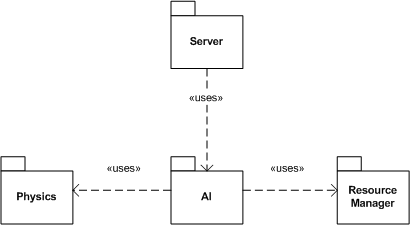
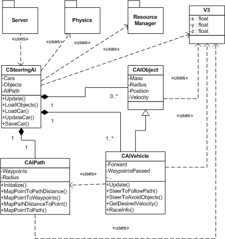

Cílem AI (Artificial Intelligence - Umìlá Inteligence) je vytvoøit umìlého "øidièe", kterı bude dùstojnım soupeøem hráèi hry Unlimited Racer. Automobil øízenı pomocí AI by mìl bıt schopen jezdit rozumnou rychlostí po trati, pøes pøeká�ky a vyhıbat se protivníkùm. Je nutné poznamenat, �e prakticky neexistuje dostupná literatura, která by se tímto problémem zabıvala. Bì�né metody pou�ívané v oboru Umìlé Inteligence jsou pro potøeby poèítaèovıch her zpravidla nepou�itelné, zpravidla pro svou vıpoèetní nároènost, nebo nutnost "pøedpoèítávání dat". Èastokrát nemají ani moc pou�itelné vısledky. Takto jsme napøíklad narazili s pùvodní myšlenkou, jak implementovat AI. Ta poèítala s vyu�ítím technik zpìtnovazebného uèení (Reinforcement Learning). Po bli�ším prozkoumání se tato metoda ukázala bıt velmi nevhodná, zejména z dùvodù velké volnosti našeho svìta, nutnosti "nauèit" algoritmus pøedem, nedostateèné schopnosti reagovat na dynamicky se mìnící situaci a v neposlední øadì také díky vıpoèetní nároènosti.
Ve finální verzi je pou�itá modifikace metody známé jako Steering, zejména pak variant Path Following a Obstacle Avoidance pro pohybující se objekty. Metoda je vıpoèetnì nenároèná, nepøedpokládá �ádná pøedpoèítaná data a tak se velmi hodí pro pou�ití v dynamické poèítaèové høe.
Implementace pøedpokládala pou�ití projektu OpenSteer, kterı obsahuje ji� hotovou implementaci zmíòìnıch algoritmù. Nakonec se tak ale nestalo, pøevá�nì z tìchto dùvodù:

Obrázek 4.1: Schéma umístìní modulu AI v projektu.
AI vyu�ívá waypointù, pomocí kterıch je popsána tra�, kterou má auto projet. Tyto waypointy jsou pøedgenerovány pomocí Limited Editoru. Auta ovládaná pomocí AI se sna�í waypointù dr�et a souèasnì (s ni�ší prioritou) se vyhıbat ostatním dynamickım objektùm (jejich� hmotnost pøekroèí jistou hranici). Ka�dı waypoint má navíc nastavenou minimální a maximální rychlost, kterou se pøes nìj dá jet. Pøi vhodném nastavení tak AI pozná, �e má do zatáèky zpomalit a naopak na rovince jet rychle. AI ignoruje statické objekty (napøíklad lampy podél trati, billboardy), proto�e je díky implementaci fyziky nelze nijak odlišit od vlastních objektù pøeká�ek (looping, rampa, ...). Pokud se auto øízené AI v urèitém èasovém intervalu nepohne o pøedem definovanı poèet metrù, je restartováno. Toto restartování je zde pro pøípad, kdy automobil uvízne v pøeká�ce èi jiném objektu a nedoká�e odtud vyjet. Hráè má k dispozici podobnou funkci.

Obrázek 4.2: Schéma tøíd v AI.
CSteeringAI je hlavní tøída projektu AI, která slou�í jako rozhraní pro komunikaci s dalšími èástmi Unlimited Raceru. Tato tøída zajiš�uje inicializaci celé AI, synchronizaci pozic a rychlostí objektù pøed vlastním vıpoètem a nastavení ovládacích prvkù aut po vıpoètu.
Samotná incializace se pak provádí pøedáním inicializaèní struktury InitStruct funkci InitAI(). V prùbìhu inicializace si tato funkce naète mapu a najde optimální posloupnost waypointù, které odpovídají cestì zvolené Limited Editoru. Optimální cesta se hledá pomocí Dijkstrova algoritmu v grafu s kladnì ohodnocenımi hranami. Vrcholy grafu jsou jednotlivé sady waypointù pøíslušející k políèkùm, pøes které vede tra�. Mezi dvìma vrcholy (v1 a v2) vede cesta s ohodnocením H, pokud spolu na trati (vygenerované v Limited Editoru) sousedí políèka pøíslušející sadám waypointù rerezentovanıch vrcholy v1 a v2. H je potom rovno vzdálenosti koneèného waypointu sady v1 a poèáteèního vrcholu sady v2. Díky tomu je mo�né pomìrnì rychle slo�it ze sad waypointù cestu, která má minimální souèet vzdáleností mezi sadami waypointù. Po lomené èáøe definované tìmito waypointy poté jezdí auta øízená pomocí AI. U waypointù je tøeba spoèítat a ulo�it absolutní pozice, proto�e v mapì ulo�ené waypointy mají relativní pozice vùèi políèku, na kterém se nacházejí. Vısledkem je tedy posloupnost waypointù ve svìtovıch souøadnicích. Tuto posloupnost potøebuje ke svému fungování tøída CAIPath. Podrobnìjší popis ulo�ení trati a waypointù lze najít v dokumentaci k souboru typu .urmap. InitAI() také inicializuje všechna auta (CAIVehicle) a ostatní dynamické objekty (CAIObject) pøíslušné mapy.
Hlavní úkol AI, tedy øízení poèítaèovıch aut, se spouští zavoláním funkce Update(). Funkce Update() je volána z projektu Server po té, co je spoèítána fyzika. Ve funkci Update() AI aktualizuje pozice a rychlosti všech objektù na mapì. Poté pro ka�dé auto ovládané pomocí AI zavolá CAIVehicle::Update(). Tato funkce spoèítá bod, ke kterému se automobil má sna�it jet spolu s jeho doporuèenou minimální a maximální rychlostí. Funkce SaveCar() následnì nastaví odpovídajícím zpùsobem ovládací prvky auta: natoèí kola po�adovanım smìrem a zrychlí/zpomalí/brzdí dle potøeby.
Tøída CAIPathreprezentuje tra�, po které auta jedou. Pou�ívá k tomu posloupnost waypointù, kolem kterıch se auta øízená AI sna�í jezdit. Celá tra� je tedy zjednodušena na lomenou èáru, která vznikne spojením za sebou jdoucích waypointù. CAIPath obsahuje funkce pro "namapování" libovolného bodu na mapì k nejbli�šímu bodu na trati, mapování ujeté vzdálenosti k bodu na trati, zjištìní vzdálenosti bodu od trati a další. Tyto funkce pou�ívá pøevá�nì tøída CAIVehicle pro urèení smìru a rychlosti jízdy poèítaèem øízeného automobilu.
Tøída CAIObject se pou�ívá k reprezentaci libovolného dynamického objektu umístìného na mapì. Pro zjednodušení se pøedpokládá, �e jakıkoliv objekt je koule s danım støedem, polomìrem, hmotností a vektorem rychlosti. Aproximace koulí je zvolena zejména pro jednoduchost vıpoètu testu kolize objektù. Nepøesnost této aproximace není pro AI (narozdíl od fyziky) pøíliš dùle�itá, ale pøesto je dobré nepou�ívat na mapì dynamické objekty, které jsou vıraznì delší v jednom smìru. AI se jim potom bude vyhıbat zbyteènì velkım obloukem. Zøejmì by bylo mo�né implementovat jinou formu reprezentace objektu na mapì, která by nemìla tyto problémy. Po peèlivém zvá�ení všech pro a proti jsme dospìli k názoru, �e je to zbyteèné a dokonce ne�ádoucí. Jakákoliv jiná reprezentace by sice zlepšila pøesnost detekce kolizí, ale zároveò by o mnoho zeslo�itila jejich vıpoèet. AI by poté mohla o nìco lépe uhıbat pøed pøeká�kami, ale vısledek by byl témìø neznatelnı, narozdíl od zmìny rychlosti vıpoètu, která je v poèítaèové høe jedním z hlavních kritérií pou�itelnosti algoritmu. Pou�itá metoda je tak i pøes své neduhy zøejmì nejlepší metodou, kterou lze pou�ít.
Tøída CAIVehicle je potomkem tøídy CAIObject. Abstrakce dynamického objektu pou�itá ve tøídì CAIObject nestaèí pro reprezentaci automobilu, proto obsahuje CAIVehicle navíc nìkolik dalších informací. Jsou to zejména informace slou�ící k urèení aktuálního umístìní v závodu, ji� projeté èásti trati, doporuèené rychlosti a testu, zda je potøeba vozidlo restartovat.
Navíc tato tøída obsahuje nìkolik funkcí dùle�itıch k urèení, kam má automobil øízenı pomocí AI jet. Tuto informaci, v podobì bodu, ke kterému se má sna�it automobil jet, poèítá funkce CombinedSteering(). CombinedSteering() v sobì kombinuje dva rùzné stavy jízdy automobilu: vyhıbání se pøeká�kám a jízdu podél trati. Hlavní dùraz je kladen na jízdu podél trati, ale s urèitou pravdìpodobností se kontroluje, zda náhodou nehrozí v budoucnosti srá�ka s jinım objektem. Pokud je taková srá�ka detekována, pou�ije se jako vısledek návratová hodnota funkce SteerToAvoidObjects(). V opaèném pøípadì se pou�ije návratová hodnota funkce SteerToFollowPath().
Tato funkce detekuje mo�nou kolizi objektu. Najde nejbli�ší hrozící kolizi s jinım dostateènì hmotnım objektem a pokusí se zatoèením této kolizi vyhnout. Cílem není jen se vyhıbat pøi mo�né kolizi, ale zároveò udr�ovat jistou minimální vzdálenost od problematickıch objektù.
Funkce SteerToFollowPath() slou�í ke sledování pøedepsané trati. To je pomìrnì obtí�nı úkol, proto�e nemù�eme dovolit zkracování trati, ale zároveò chceme dovolit jistou míru volnosti jejího následování. Tento problém se nakonec podaøilo vyøešit
Abychom zajistili dobrou jízdu po trati, predikujeme pozici auta po t sekundách (ve skuteènosti se parametr t pohybuje v rozmezí 0.5s - 2s). Pokud je pozice auta dostateènì blízko trati, pokraèujeme v jízdì tímto smìrem. V opaèném pøípadì musíme zatoèit, abychom v budousnocti nevyjeli z trati. Spoèteme kam bychom se pøi ideální jízdì po trati mìli dostat a sna�íme se k tomuto bodu smìøovat. To nám definuje smìr naší jízdy. Rychlost je definována pomocí naší aktuální rychlosti a doporuèené minimální a maximální rychlosti pøíslušné k tomuto bodu. Tento princip jízdy je vıpoèetnì pomìrnì jednoduchı a má dobré jízdní vısledky pøi vhodnì zvolenıch parametrech. Správné nastavení velkého mno�ství rùznıch parametrù, spolu velmi obtí�nım realtime ladìním pomocí logù, se však ukázalo bıt jedním z nejvìtších problému pøi programování AI.
V3 je tøída reprezentující tøírozmìrnı vektor. Pou�ívá se v celém projektu AI pro uchování pozic, vekterù rychlosti a dalších údajù. Tøída V3 obsahuje mnoho u�iteènıch funkcí z analytické geometrie, které zjednodušují vıpoèty potøebné v AI.